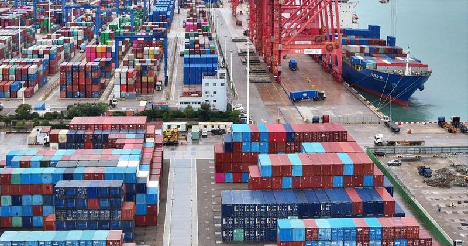

⚡Tổng thống Donald Trump đề xuất tiếp tục tăng thuế với một số nền kinh tế
(Dân trí) - Tổng thống Mỹ Donald Trump dự kiến áp thêm thuế nhập khẩu đối với hàng hóa từ 14 đối tác thương mại lớn, trong đó có Trung Quốc, Ấn Độ và EU nhằm đối phó tình trạng dư thừa năng lực sản xuất. Hàng hoá tại cản